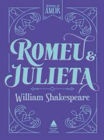
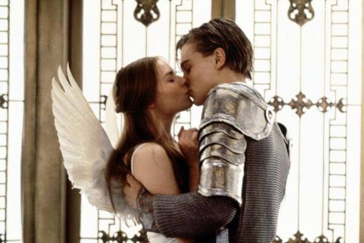

Personagens
MONTECCHIO
Romeu: personagem principal
Sr. Montecchio: Pai de Romeu
Sra. Montecchio: Mãe de Romeu
Abraão: Criado dos Montecchio
Baltazar: Criado dos Montecchio
Rosalina: Pretendente de Romeu
Boticário: Quem vende a poção fatal para Romeu
Frei Lourenço: Confidente de Romeu
Mercúrio: Amigo de Romeu
CAPULETO
Julieta: Personagem principal
Sr. Capuleto: Pai de Julieta
Sra. Capuleto: Mãe de Julieta
Pedro: Criado dos Capuleto
Gregório: Criado dos Capuleto
Páris: Pretendente de Julieta
Ama: Cuidadora de Julieta
Teobaldo: Primo de Julieta
Autor
William Shakespeare
Nasceu em 1564 mas não se tem muitos detalhes registrados sobre a sua infância. Casou-se aos 18 anos e, após o nascimento de seus filhos, passou por dificuldades financeiras. Por conta disso, mudou-se para Londres e conseguiu um emprego como guardador de cavalos na porta de um teatro. Algum tempo depois começou a fazer serviços nos bastidores do teatro e apresentando pequenas peças. Logo começou a escrever o maior número de peças apresentadas no teatro, com temas relacionados ao amor e ao sentimentalismo, tornando-se o maior escritor inglês e o dramaturgo mais influente do mundo.
Resumo do Livro

Os dois jovens moradores de Verona, na Itália, chamados Romeu e Julieta se apaixonam, mas suas famílias são rivais, e sabendo que os pais jamais iriam autorizar a união, se casam escondidos, com a ajuda de frei Lourenço. Por uma briga que acaba gerando a morte de Teobaldo e Mercúrio, o príncipe de Verona resolve expulsar Romeu. Desesperada com a partida de Romeu, Julieta pede ajuda ao frei Lourenço, que realizou o casamento. A ideia do frei é que Julieta tome uma poção que faça com que ela pareça morta. Romeu, ao receber a notícia de sua suposta morte, entra em desespero e compra uma substância para provocar a própria morte. Ao encontrar Julieta desacordada na cripta dos Capuleto, ele acredita que ela realmente morreu e toma o veneno que havia trazido. Julieta, ao acordar, descobre que Romeu está morto e, com um punhal, também acaba com sua própria vida.
Curiosidades

1- As famílias montéquio e capuleto foram citadas pela primeira vez em “A Divina Comédia”, poema de Dante, com apelidos diferentes dos usados por Shakespeare. As famílias parecem ter existido na Itália medieval.
2- A cena que mostra um dos momentos mais icônicos, na varanda, foi adaptada em 1818, onde o termo varanda foi realmente usado. Na peça original a Julieta falava com o Romeu de uma janela, no jardim dos Capuleto.
3- O título original da peça era mais longo e descritivo: “A mais excelente e lamentável tragédia de Romeu e Julieta”.
4- Em 2015, a obra completa de Shakespeare foi nomeada a terceira mais influente da história, perdendo apenas para A Origem das Espécies, de Charles Darwin, e O Manifesto do Partido Comunista, de Karl Marx e Friedrich Engels.
5- Em toda a sua obra, Shakespeare usou 28.829 palavras diferentes, o que faz alguns pesquisadores sugerirem que o escritor tinha um vocabulário de cerca de 100 mil palavras, o maior de todos os tempos.
6- A obra teve diversas adaptações para o cinema, entre elas a de 1996, interpretada por Leonardo Dicaprio e Claire Danes
VOLTAR AO TOPO